How to install Digimon Story: Time Stranger Mods
Backup your save data
Before installing any mods, back up your save data in a safe location in case you want to restore the game to its original, unmodded state.
The save files are located in Steam's "savedata" folder. The default path is:
C:\Program Files (x86)\Steam\steamapps\common\Digimon Story Time Stranger\gamedata\savedata
Download Reloaded II
To manage, install and create mods, we will use a program called Reloaded II. It is available in two versions: the original and "II.5 ReMIX"; both have the same features, but II.5 ReMIX includes a UI/UX overhaul and several QOL improvements, like a "check for updates" button. Choose the version you prefer.
- Download the latest version of Reloaded II from GitHub (
release.zip). - Move the ZIP file to the location where you want to install it, such as a "Reloaded" folder on your desktop.
- Extract the contents of
Release.zipinto that folder, then run Reloaded-II.exe. - Reloaded II should now open.
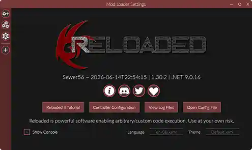
For questions or bug reports, join the Reloaded II Discord. For more information, check the documentation.
- Download the latest version of Reloaded II.5 ReMIX from GitHub (
release.zip). - Move the ZIP file to the location where you want to install it, such as a "Reloaded" folder on your desktop.
- Extract the contents of
Release.zipinto that folder, then run Reloaded-II.exe. - Reloaded II.5 ReMIX should now open.

For questions or bug reports, join the Reloaded II.5 ReMIX Discord. For more information, check the documentation.
Note
- If a "Windows protected your pc" message appears, go to "More info → Run anyway".
- If a pop-up appears prompting you to download ".NET Desktop Runtime", click on "download it now" and install it.
Add Digimon Story Time Stranger to the games list
- Click the (+) button in the left sidebar.

- Go to where Digimon Story: Time Stranger is installed. Select the
Digimon Story Time Stranger.exefile, then click Save. The Default path is:
C:\Program Files (x86)\Steam\steamapps\common\Digimon Story Time Stranger\Digimon Story Time Stranger.exe
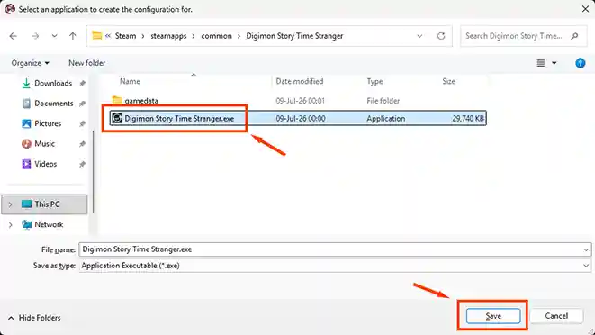
- Digimon Story: Time Stranger will be added to Reloaded II.
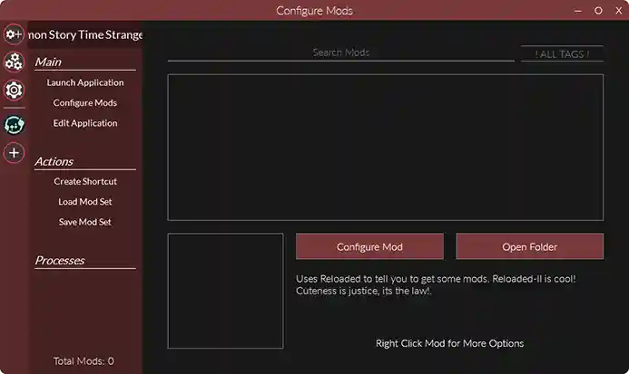
- Click the Add Game button in the top-right.

- Go to where Digimon Story: Time Stranger is installed. Select the
Digimon Story Time Stranger.exefile, then click Save. The Default path is:
C:\Program Files (x86)\Steam\steamapps\common\Digimon Story Time Stranger\Digimon Story Time Stranger.exe
- Digimon Story: Time Stranger will be added to Reloaded II.5 ReMIX.
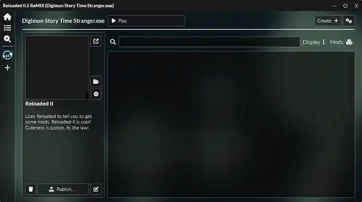
Install DSTS Mod Loader
Next, install Digimon Story: Time Stranger Mod Loader. This dependency allows Reloaded to run mods directly from folders, and also enables the game to read .dds textures without needing to rename them to .img.
- Download the latest version of Digimon Story: Time Stranger Mod Loader (
DSTS.ModLoader[version].7z). - Drag and drop the
.7zfile into Reloaded II. Wait a few seconds and it should appear in the mod list.
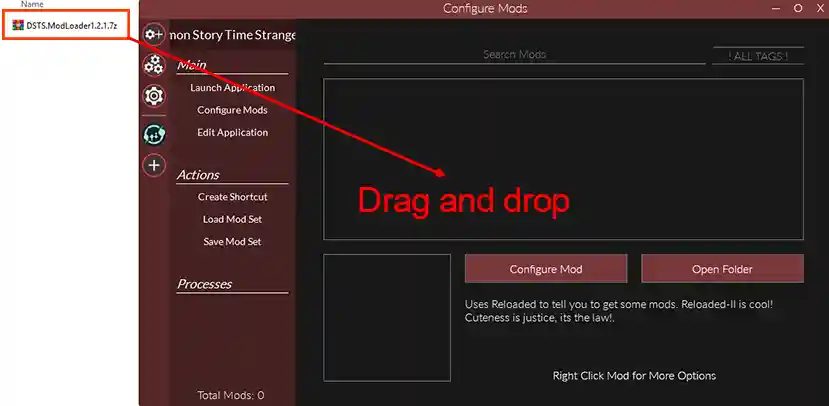
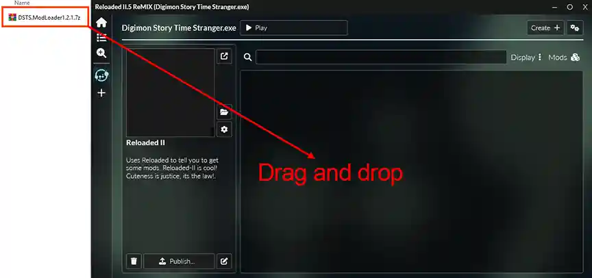
Note
- Digimon Story: Time Stranger Mod Loader will install a second dependency called "MVGL File Loader". If it doesn't, you can download it manually from Github. The process is the same: download the
.7zfile, and drag and drop it into Reloaded II.
Install mods
Gamebanana
On GameBanana, mods with 1-Click Install support can be installed just by clicking the "Reloaded II" button.

Drag and drop
To install a mod from another source, simply drag and drop the mod's .zip or .7z file into Reloaded II, just as you did when installing the Digimon Story: Time Stranger Mod Loader.
There are no notifications while mods are installing. Just wait until it finishes and the pop up appears.
Manual installation
This is only recommended for big mods (1 GB+) or if drag and drop is not working.
- Extract the mod files into a new folder.
- Move that folder into your Reloaded's Mods folder: RELOADED_FOLDER/Mods/
- Your folders should like: RELOADED_FOLDER/Mods/ExampleMod/ModConfig.json
Enable and Disable mods
Click the checkbox next to a mod to enable or disable it.
A mod is enabled when the checkbox displays a [+], and disabled when the checkbox displays a gray [-].
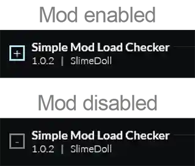
Check if mods are working
- Install Simple Load Checker. It'll edit the intro Bandai Namco logo, making easy to see if mods are working correctly.
- Make sure all your mods are enabled, then launch the game from Reloaded.
Click the "Launch Application" option.
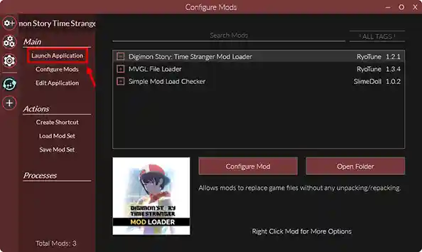
If the Bandai Namco splashcreen looks like this, it means everything is working correctly:

From now on, when you want to play with mods, start the game by clicking the Launch Application option in Reloaded.
Click the "Play" button.
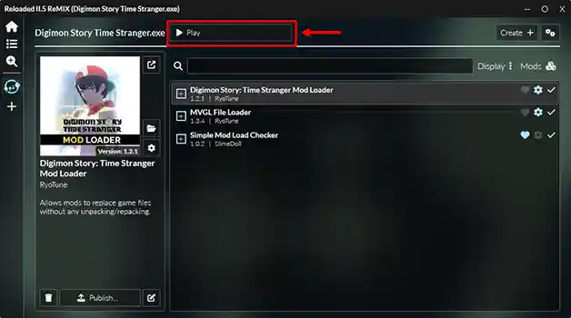
If the Bandai Namco splashcreen looks like this, it means everything is working correctly:
From now on, when you want to play with mods, start the game by clicking the Play button in Reloaded.
Note
If you get the error "an Application Control policy has blocked this file" while trying to run a game from Reloaded, it's because Windows sometimes blocks it. In that case, you must disable Smart App Control:
- In Windows Search, type "Smart App Control" and turn it off.
- Or go to Privacy & security → Windows Security → App & browser control → Smart App Control settings.
Remember to turn it back on when you are not using the program.
Uninstall mods
To uninstall a mod, go to the "Manage mods" button in the left sidebar, choose the mod you want to delete from the list, and click "delete"
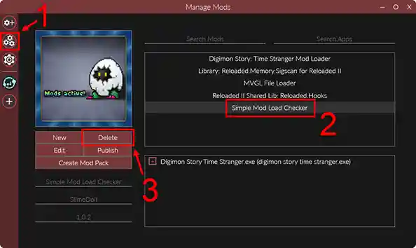
To uninstall a mod, simply right click on it and select "delete".
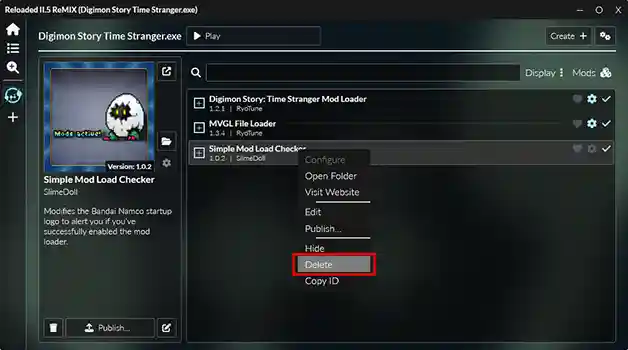
Warning
Before deleting a mod:
- If it's an outfit mod, make sure your character is wearing a different outfit, or the game will crash.
- If the mod adds a new Digimon and you have it in your party or box, it will turn into an invisible Digimon. You can delete it or leave it in your box, but don't use it in battle or the game will crash. Checking its summary screen may also crash the game in some cases.